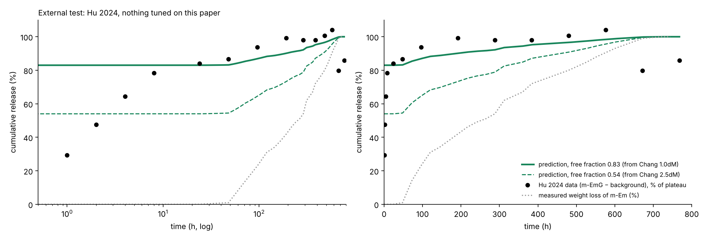

پارامترهای طراحی را عوض کن و ببین شکل منحنی رهایش، زمان نیمهرهایش و سازوکار کنترلکننده چه میشود. مدل همان مدل یکپارچه پایاننامه است: نفوذ با ضریب محاسبهشده و اصلاح تورم، اتصال دارو به شبکه (اثر اتصال عرضی)، و تخریب. دکمههای Kodra و Chang مقادیر اندازهگیریشده همان مقالهها را میگذارند و داده واقعی را روی نمودار نشان میدهند.
متغیر طراحی آزمایش، زمان اتصال عرضی با تانیک اسید است: ۴، ۲ و ۰.۵ ساعت. با هر مرحله یک پدیده به مدل اضافه میشود و همان لحظه روی داده هر سه فرمولاسیون نمره میگیرد. روی هر مرحله بزن.
مراحل ۱ و ۲ رد نشدهاند: انتقال دارو را درست میدهند، ولی بهتنهایی زمان رهایش را توضیح نمیدهند. مدل وقتی معنا پیدا میکند که اینها کنار اتصال و تخریب قرار بگیرند.

آزمون بیرونی، Hu 2024 (جنتامایسین، ژلاتین نوع B با GA): هیچ پارامتری روی این مقاله تنظیم نشد. سهم داروی آزاد (۰.۸۳) از Chang 2023 آمده و تخریب از کاهش وزن اندازهگیریشده خود Hu.
از روز ۱ به بعد خطا ۹.۱ درصد است و سطح ۲۴ ساعت درست پیشبینی شد (داده ۸۴٪، مدل ۸۳٪). در ساعتهای ۱ تا ۸ داده آهستهتر از مدل بالا میرود (خطای کل ۱۹.۵). یعنی یک مرحله جداشدن چندساعته هست که Chang اندازه نگرفته بود. این همان مسیر اتصال (k_off) است و برای Hu باید از دادهای مستقل تعیین شود، نه با برازش.
| مرحله | K-1 | K-2 | K-3 | میانگین |
|---|
اعداد خطای RMS هستند، به درصد رهایش.
| ورودی | K-1 | K-2 | K-3 | منبع |
|---|---|---|---|---|
| زمان اتصال عرضی | 4 h | 2 h | 0.5 h | طراحی |
| تورم بیشینه SD% | 1942 | 1700 | 920 | اندازهگیری |
| درجه اتصال عرضی CD% | 95.8 | ~93 | 90.9 | اندازهگیری |
| بازده بارگذاری EE% | 38.9 | 22.5 | 15.2 | اندازهگیری |
| DR% در ۳ ساعت | 95 | 94 | 43 | اندازهگیری |
| k_off (نیمهعمر) | 7.2 h | 4.6 h | 3.6 h | تنظیم: K-1، ≤ ۵ ساعت مقیاس با EE |
| کسر غیرقابلرهایش | 0.38 | 0 | 0 | نقطه پایانی منحنی |
نیمدایره، مقطع محورمتقارن ذره است، مثل خروجی کامسول. رنگ غلظت را نشان میدهد (آبی صفر، قرمز بیشینه) و پیکانهای سفید جهت شار را. چپ: فیک تنها. راست: مدل کامل روی داده کودرا. زمان را جلو ببر یا «پخش» را بزن.
برداشت اصلی: در فیک، دارو از سطح به داخل خالی میشود و ذره در کسری از ثانیه تمام میشود. در مدل کامل، کل ذره یکنواخت کمرنگ میشود، چون داروی متصل همهجا با هم جدا میشود. گرادیان داروی آزاد هست، ولی کمتر از ۰.۰۰۱٪ دارو را در خود دارد. پس تصویر کامسولی فیک برای ژلاتین کراسلینکشده تصویر درستی نیست.
ژلاتین با GA، ماده BSA، کلاژناز. شش اندازه ذره؛ تخریب و رهایش هر دو اندازهگیری شدهاند. مدل: رهایش برابر کاهش جرم اندازهگیریشده است، با تأخیر τ = R / v. مقدار v فقط از اندازه A آمده (۰.۶۲ میکرون بر ساعت) و پنج اندازه دیگر پیشبینی شدهاند. v را تغییر بده یا فیک را روشن کن.
نقطه: داده Fig. 2 · خط: پیشبینی · خطچین: فیک (ذره در چند ثانیه خالی میشود)
| اندازه | قطر µm | τ (h) | RMSE |
|---|
این شکل خلاصهشده مدل کامل است و وقتی زمان نفوذ خیلی کوتاهتر از زمان جدا شدن و تخریب باشد معتبر است. حداکثر اختلاف با حل کامل معادله دیفرانسیل جزئی برای دادههای Kodra حدود 3×10⁻⁶ است. k_off برای Kodra فقط روی ۵ ساعت اول MS/K-1 تنظیم شده و برای بقیه از بازده بارگذاری اندازهگیریشده مقیاس شده است.